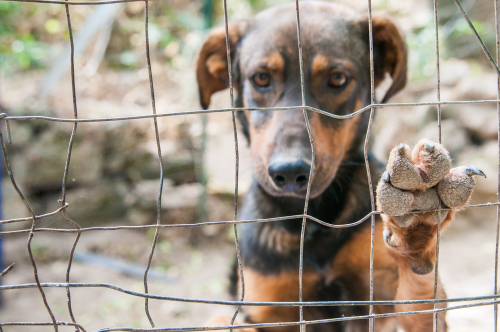

Pets are abandoned for a variety of reasons.
Often, when abandoned, pets are forced to fend for themselves,
and become feral. In particular, cats and dogs go to colonies.
Feral cats are said to outnumber feral dogs.
Feral cats are difficult to deal with,
as often they become impossible to socialize enough to be re-introduced
to a new human owner. In general,
only some newly abandoned cats and very young feral kittens can be tamed.
In many states in the United States, it is illegal to abandon a pet.
In Iowa, doing so is a misdemeanor.
|
 |